Code
library(tidyverse)
library(patchwork)
library(gt)
library(rstan)
options(mc.cores = parallel::detectCores())
rstan_options(auto_write = T)Jessica Helmer
April 13, 2026
The document used data that I think was not recoded to align with scale direction. I renamed the values on Qualtrics, adding a _r tag to variables that need recoding. When I create recoded variables below, they will not have the _r tag. I also changed the BIS / BAS variable names to point specifically to their subscale (BIS or BAS).
dat_full |>
select(matches("attention")) |>
imap(~ tibble(var = str_extract(.y, "([a-zA-Z-]+)_attention", group = 1),
p = table(.x) |> prop.table() |> as_tibble()) |>
unnest(cols = p)) |>
list_rbind() |>
rename(`Attention Check` = `.x`,
p = n) |>
gt(rowname_col = "var") |>
fmt_percent(columns = p,
decimals = 1) |>
cols_label("p" = " ") |>
tab_options(table.font.size = 12)| Attention Check | ||
|---|---|---|
| BISBAS | Very true for me | 100.0% |
| IUS | A little characteristic of me | 100.0% |
| STAI-T | Often | 100.0% |
Cleaning, histograms, and single-factor CFA for each anxiety scale, with BIS and BAS separated.
IUS <- dat_full |>
select(id, starts_with("IUS"), -matches("IUS_T"), -matches("IUS_attention")) |>
mutate(across(!id, ~ recode_values(.x,
"Entirely characteristic of me" ~ 5,
"Very characteristic of me" ~ 4,
"Somewhat characteristic of me" ~ 3,
"A little characteristic of me" ~ 2,
"Not at all characteristic of me" ~ 1)))
imap(IUS |> select(-id), \(data, var) tibble(data) |>
ggplot(aes(x = data)) +
geom_bar() +
labs(x = var) +
scale_x_continuous(limits = c(0.5, 5.5),
breaks = 1:5) +
scale_y_continuous(NULL,
breaks = NULL) +
guides(x = guide_axis(cap = "both")) +
theme_classic(base_size = 12) +
theme(axis.line.y = element_blank())) |>
wrap_plots()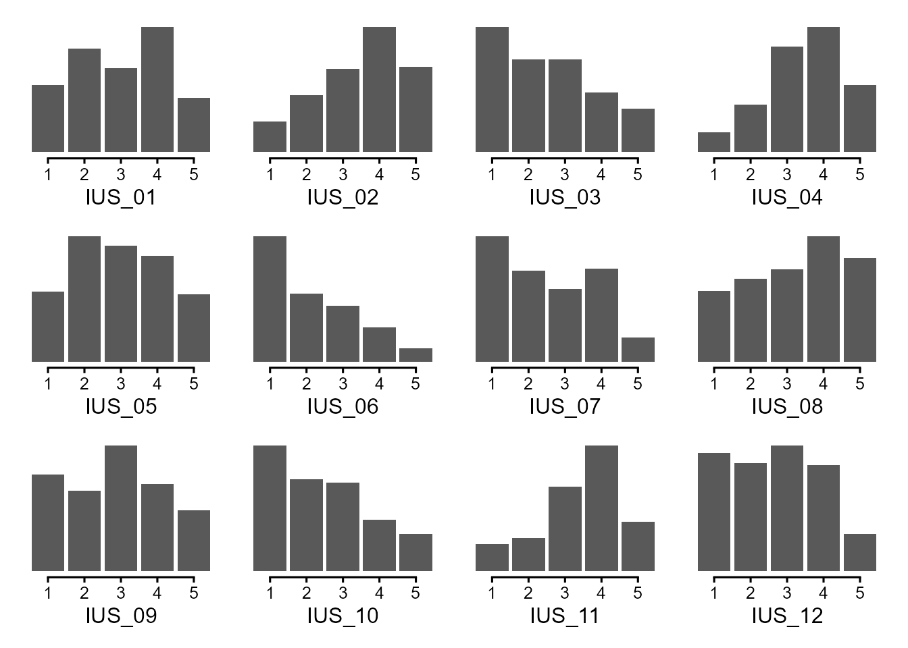
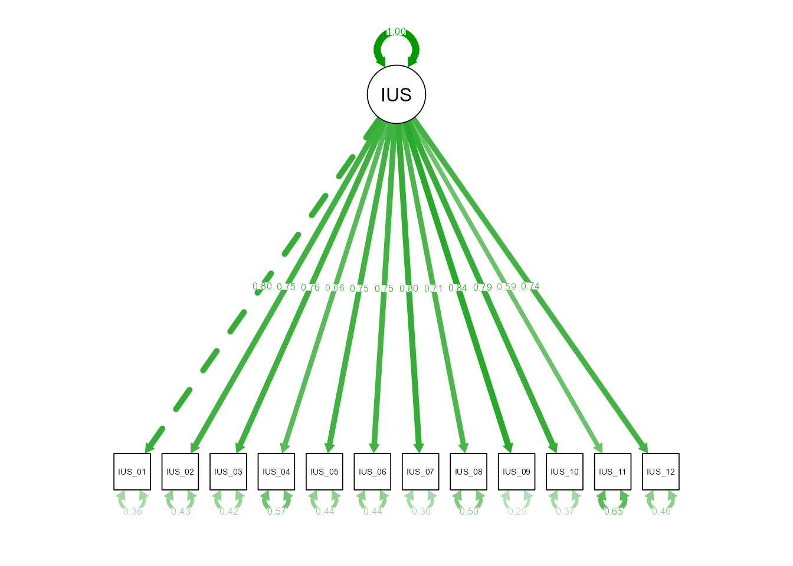
BIS <- dat_full |>
select(id, starts_with("BIS"), -matches("BISBAS_T"), -matches("BISBAS_attention")) |>
mutate(across(!id, ~ recode_values(.x,
"Very true for me" ~ 4,
"Somewhat true for me" ~ 3,
"Somewhat false for me" ~ 2,
"Very false for me" ~ 1))) |>
mutate(across(ends_with("_r"), ~ 5 - .x,
.names = "{str_replace(.col, '_r', '')}"),
.keep = "unused")
imap(BIS |> select(-id), \(data, var) tibble(data) |>
ggplot(aes(x = data)) +
geom_bar() +
labs(x = var) +
scale_x_continuous(limits = c(0.5, 4.5),
breaks = 1:5) +
scale_y_continuous(NULL,
breaks = NULL) +
guides(x = guide_axis(cap = "both")) +
theme_classic(base_size = 12) +
theme(axis.line.y = element_blank())) |>
wrap_plots()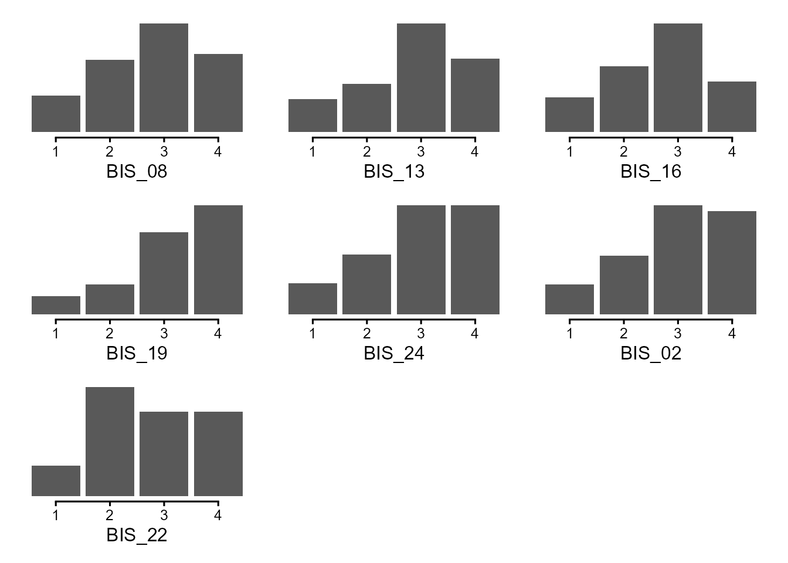
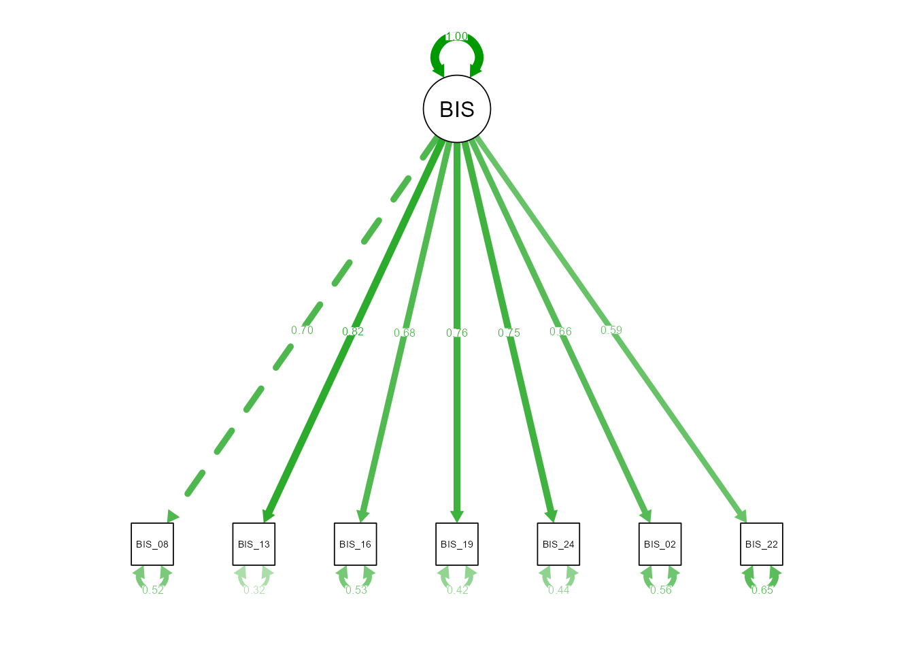
# gr_BIS <- rstan::stan(file = here::here("Models", "graded-response_2pl_code.stan"),
# data = list(K = 4,
# N_student = nrow(BIS),
# N_item = ncol(BIS) - 1, # taking out id column
# Y = BIS |> select(-id)))
#
# gr_BIS |>
# as.data.frame() |>
# select(starts_with("kappa[1"))
#
# gr_BIS |>
# as.data.frame() |>
# slice_sample(n = 50) |>
# select(starts_with("a"), starts_with("b")) |>
# mutate(rep = row_number()) |>
# pivot_longer(!rep,
# names_to = c("par", ".value"),
# names_pattern = "([a-z]+)\\[(\\d)\\]") |>
# pivot_longer(!c(rep, par),
# names_to = "item", values_to = "est") |>
# pivot_wider(names_from = par, values_from = est) |>
# mutate(eta = )BAS <- dat_full |>
select(id, starts_with("BAS"), -matches("BISBAS_T"), -matches("BISBAS_attention")) |>
mutate(across(!id, ~ recode_values(.x,
"Very true for me" ~ 4,
"Somewhat true for me" ~ 3,
"Somewhat false for me" ~ 2,
"Very false for me" ~ 1))) |>
mutate(across(ends_with("_r"), ~ 5 - .x,
.names = "{str_replace(.col, '_r', '')}"),
.keep = "unused")
imap(BAS |> select(-id), \(data, var) tibble(data) |>
ggplot(aes(x = data)) +
geom_bar() +
labs(x = var) +
scale_x_continuous(limits = c(0.5, 4.5),
breaks = 1:5) +
scale_y_continuous(NULL,
breaks = NULL) +
guides(x = guide_axis(cap = "both")) +
theme_classic(base_size = 12) +
theme(axis.line.y = element_blank())) |>
wrap_plots()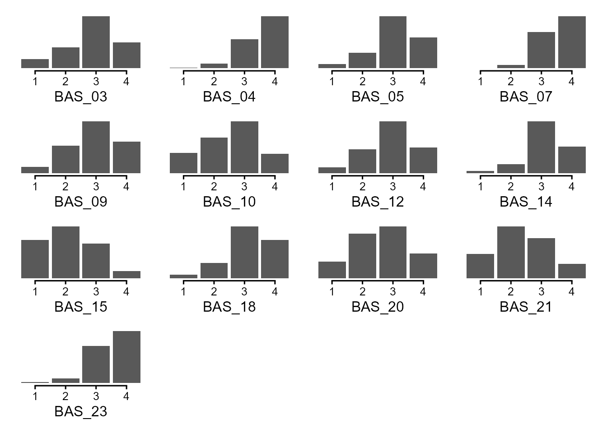
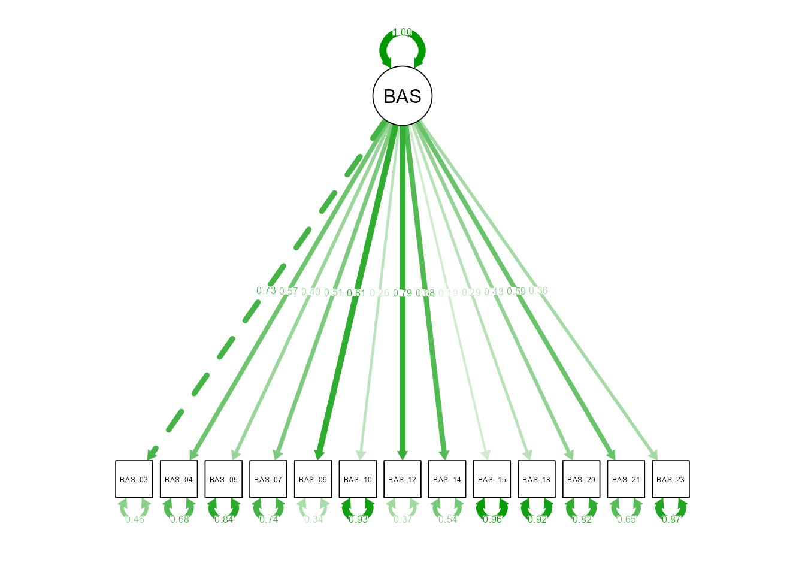
STAI <- dat_full |>
select(id, starts_with("STAI"), -matches("STAI-T_T"), -matches("STAI-T_attention")) |>
mutate(across(!id, ~ recode_values(.x,
"Almost never" ~ 4,
"Often" ~ 3,
"Sometimes" ~ 2,
"Almost always" ~ 1))) |>
mutate(across(ends_with("_r"), ~ 5 - .x,
.names = "{str_replace(.col, '_r', '')}"),
.keep = "unused") |>
rename_with(~ str_replace(.x, "-T", ""),
everything())
imap(STAI |> select(-id), \(data, var) tibble(data) |>
ggplot(aes(x = data)) +
geom_bar() +
labs(x = var) +
scale_x_continuous(limits = c(0.5, 4.5),
breaks = 1:5) +
scale_y_continuous(NULL,
breaks = NULL) +
guides(x = guide_axis(cap = "both")) +
theme_classic(base_size = 12) +
theme(axis.line.y = element_blank())) |>
wrap_plots()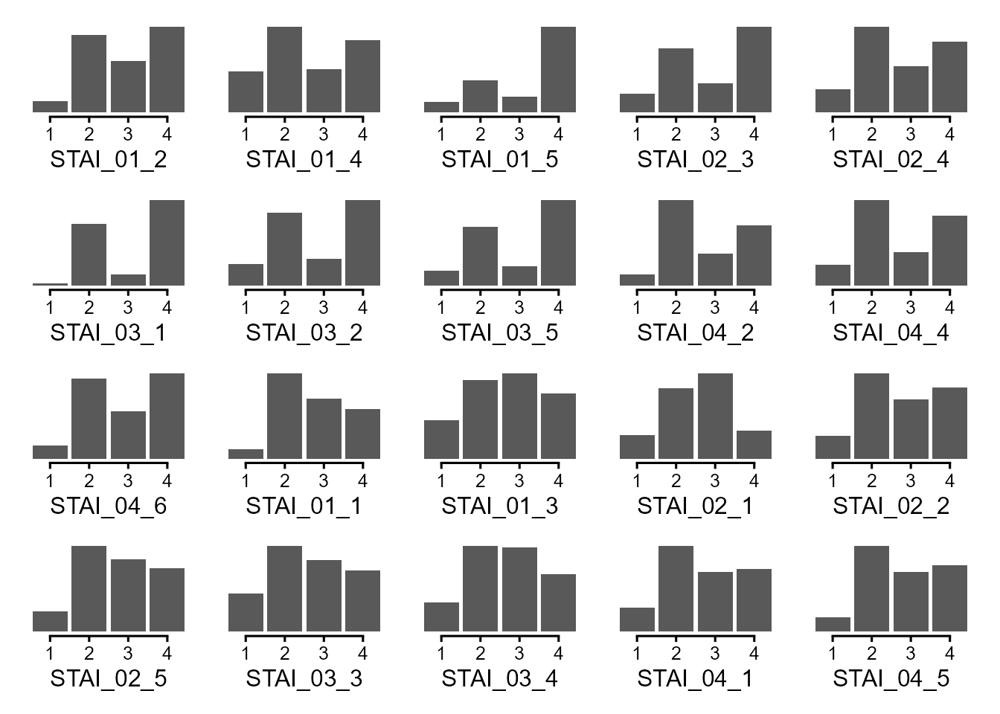
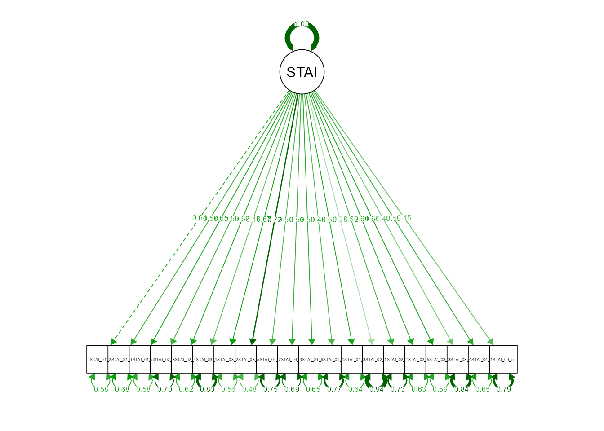
dat <- dat_full |>
select(id, matches("^[F][GL][PV]_[0-9\\.-]+$")) |>
pivot_longer(!id,
names_to = "item", values_to = "response") |>
filter(!is.na(response)) |>
separate_wider_regex(item, c(cond = "[F][GL][PV]", "_", rest = ".*")) |>
separate_wider_regex(rest, c(fixed = "^\\d*", "-*", varied = ".*")) |>
separate_wider_position(cond, c(1, "frame" = 1, "target" = 1)) |>
mutate(.by = c(frame, target, fixed),
item = cur_group_id(),
.after = id) |>
mutate(.by = c(item, id),
trial = row_number(),
.after = id) |>
mutate(varied = as.numeric(varied),
fixed = as.numeric(fixed),
lottery = ifelse(target == "P", varied, fixed),
certain = ifelse(target == "V", varied, fixed),
ev_lottery = ifelse(frame == "L", 100 - lottery, lottery),
ev_certain = ifelse(frame == "L", 100 - certain, certain),
lottery_std = (lottery - mean(lottery)) / sd(lottery),
certain_std = (certain - mean(certain)) / sd(lottery),
# if matches the fixed dollar option, 0, else 1 (for risky)
chose_risky = ifelse(str_detect(response, "Keep \\$[0-9]+") |
str_detect(response, "Forfeit \\$[0-9]+"), 0, 1)) |>
left_join(IUS |>
pivot_longer(!id, names_to = "item", values_to = "response") |>
summarize(.by = id,
IUS = mean(response)),
by = "id") |>
left_join(BIS |>
pivot_longer(!id, names_to = "item", values_to = "response") |>
summarize(.by = id,
BIS = mean(response)),
by = "id") |>
left_join(BAS |>
pivot_longer(!id, names_to = "item", values_to = "response") |>
summarize(.by = id,
BAS = mean(response)),
by = "id") |>
left_join(STAI |>
pivot_longer(!id, names_to = "item", values_to = "response") |>
summarize(.by = id,
STAI_T = mean(response)),
by = "id") |>
mutate(lottery_certain_diff = ev_lottery - ev_certain,
across(c(IUS, BIS, BAS, STAI_T), ~ (.x - mean(.x)) / sd(.x),
.names = "{.col}_z"))m0 <- lme4::glmer(chose_risky ~ 1 + (1 | item) + (1 | id),
dat, family = "binomial")
saveRDS(m0, here::here("Models", "risky-choice_0.rds"))
m1.0 <- lme4::glmer(chose_risky ~ IUS_z + BIS_z + BAS_z + STAI_T_z + lottery_certain_diff + frame +
(1 | item) + (1 | id),
dat, family = "binomial",
lme4::glmerControl(optimizer = "bobyqa"))
saveRDS(m1.0, here::here("Models", "risky-choice_1.0.rds"))
m1.1 <- lme4::glmer(chose_risky ~ IUS_z + BIS_z + BAS_z + STAI_T_z + lottery_certain_diff + frame +
IUS_z:frame + BIS_z:frame + BAS_z:frame + STAI_T_z:frame + lottery_certain_diff:frame +
IUS_z:lottery_certain_diff + BIS_z:lottery_certain_diff + BAS_z:lottery_certain_diff + STAI_T_z:lottery_certain_diff +
(1 | item) + (1 | id),
dat, family = "binomial",
lme4::glmerControl(optimizer = "bobyqa"))
saveRDS(m1.1, here::here("Models", "risky-choice_1.1.rds"))m0 <- readRDS(here::here("Models", "risky-choice_0.rds"))
m1.0 <- readRDS(here::here("Models", "risky-choice_1.0.rds"))
m1.1 <- readRDS(here::here("Models", "risky-choice_1.1.rds"))
sjPlot::tab_model(m0,
show.ci = F,
show.se = T,
string.se = "SE",
show.r2 = F,
dv.labels = "",
string.est = "OR",
title = "Unconditional")
sjPlot::tab_model(m1.0,
show.ci = F,
show.se = T,
string.se = "SE",
show.r2 = F,
dv.labels = "",
string.est = "OR",
title = "No Interactions")
sjPlot::tab_model(m1.1,
show.ci = F,
show.se = T,
string.se = "SE",
show.r2 = F,
dv.labels = "",
string.est = "OR",
title = "Some Interactions")| Predictors | OR | SE | p |
| (Intercept) | 0.92 | 0.09 | 0.379 |
| Random Effects | |||
| σ2 | 3.29 | ||
| τ00 id | 0.24 | ||
| τ00 item | 0.15 | ||
| ICC | 0.11 | ||
| N item | 23 | ||
| N id | 200 | ||
| Observations | 18148 | ||
| Predictors | OR | SE | p |
| (Intercept) | 0.67 | 0.06 | <0.001 |
| IUS z | 1.13 | 0.07 | 0.060 |
| BIS z | 0.90 | 0.06 | 0.134 |
| BAS z | 1.10 | 0.06 | 0.083 |
| STAI T z | 1.04 | 0.07 | 0.579 |
| lottery certain diff | 1.02 | 0.00 | <0.001 |
| frame [L] | 1.51 | 0.16 | <0.001 |
| Random Effects | |||
| σ2 | 3.29 | ||
| τ00 id | 0.46 | ||
| τ00 item | 0.05 | ||
| ICC | 0.13 | ||
| N item | 23 | ||
| N id | 200 | ||
| Observations | 18148 | ||
| Predictors | OR | SE | p |
| (Intercept) | 0.62 | 0.05 | <0.001 |
| IUS z | 1.12 | 0.08 | 0.105 |
| BIS z | 0.82 | 0.06 | 0.009 |
| BAS z | 1.15 | 0.07 | 0.012 |
| STAI T z | 0.99 | 0.07 | 0.884 |
| lottery certain diff | 1.02 | 0.00 | <0.001 |
| frame [L] | 1.58 | 0.16 | <0.001 |
| IUS z × frame [L] | 1.03 | 0.04 | 0.511 |
| BIS z × frame [L] | 1.08 | 0.05 | 0.089 |
| BAS z × frame [L] | 0.97 | 0.03 | 0.303 |
| STAI T z × frame [L] | 1.11 | 0.05 | 0.023 |
| lottery certain diff × frame [L] |
0.99 | 0.00 | <0.001 |
| IUS z × lottery certain diff |
1.00 | 0.00 | 0.004 |
| BIS z × lottery certain diff |
1.01 | 0.00 | <0.001 |
| BAS z × lottery certain diff |
1.00 | 0.00 | <0.001 |
| STAI T z × lottery certain diff |
1.00 | 0.00 | 0.502 |
| Random Effects | |||
| σ2 | 3.29 | ||
| τ00 id | 0.47 | ||
| τ00 item | 0.05 | ||
| ICC | 0.14 | ||
| N item | 23 | ||
| N id | 200 | ||
| Observations | 18148 | ||
effect_labels <- list("STAI_T_z[all]" = "STAI_T",
"BIS_z[all]" = "BIS_z",
"BAS_z[all]" = "BAS_z",
"frame" = "Frame",
"IUS_z[all]" = "IUS",
"lottery_certain_diff[all]" = "Lottery - Certain",
"lottery_certain_diff" = "Lottery - Certain")
sig_interactions <- list(c("STAI_T_z[all]", "frame"),
c("lottery_certain_diff[all]", "frame"),
c("IUS_z[all]", "lottery_certain_diff"),
c("BIS_z[all]", "lottery_certain_diff"),
c("BAS_z[all]", "lottery_certain_diff"))
sig_interactions |> walk(~ (ggeffects::ggpredict(m1.1, .x) |>
plot() +
labs(title = NULL, y = "P(Chose Risky)",
x = effect_labels[.x[1]],
fill = effect_labels[.x[2]],
color = effect_labels[.x[2]]) +
coord_cartesian(ylim = c(0, 1)) +
theme_classic(base_size = 12) +
theme(aspect.ratio = 1,
legend.position = "bottom")) |>
print())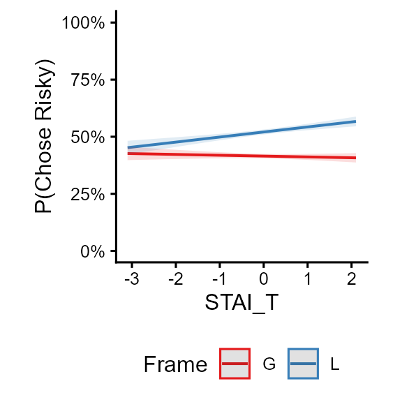
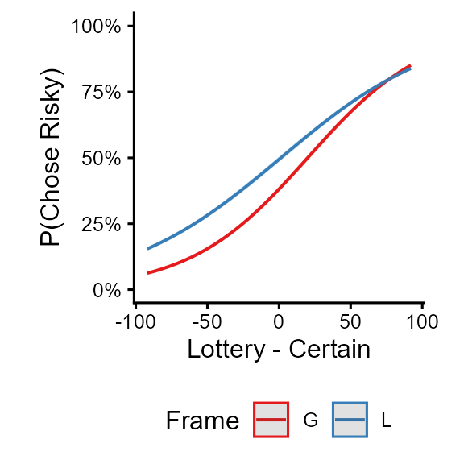
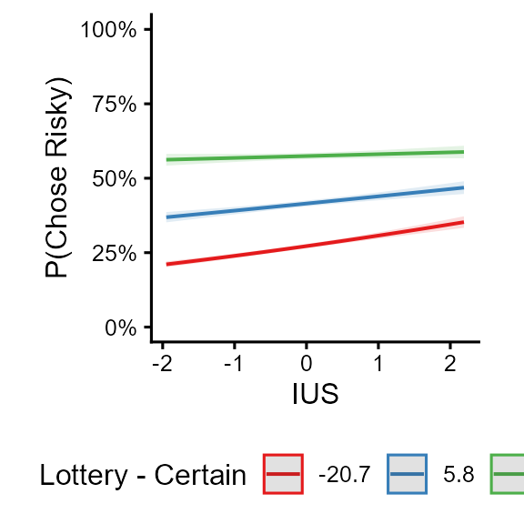
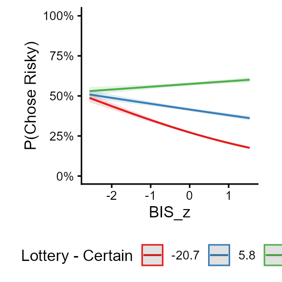
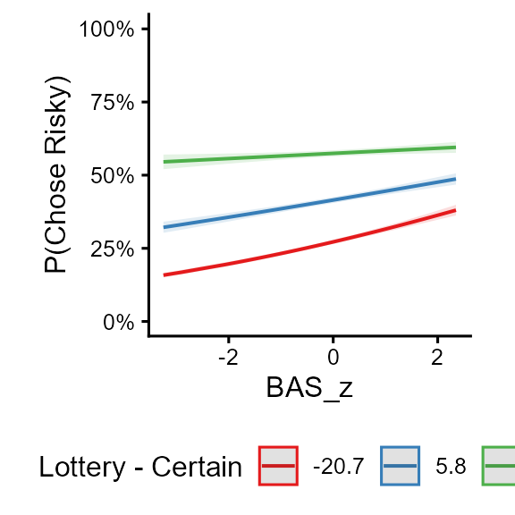
sig_mains <- list("BIS_z[all]", "BAS_z[all]", "lottery_certain_diff[all]", "frame")
sig_mains |> walk(~ (ggeffects::ggpredict(m1.1, .x) |>
plot() +
labs(title = NULL, y = "P(Chose Risky)",
x = effect_labels[.x]) +
coord_cartesian(ylim = c(0, 1)) +
theme_classic(base_size = 12) +
theme(aspect.ratio = 1)) |>
print())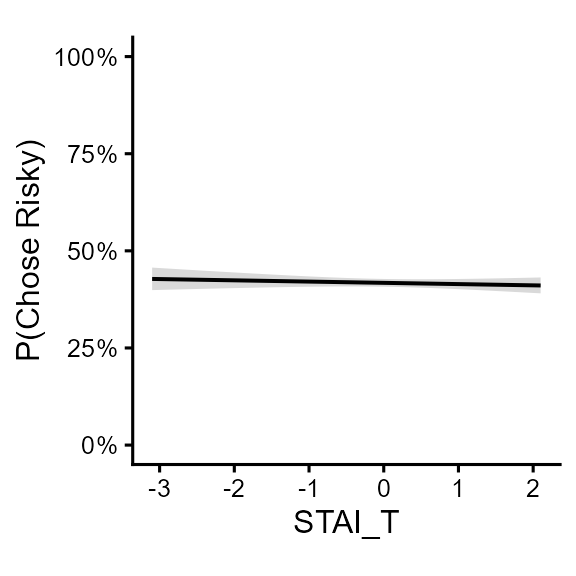
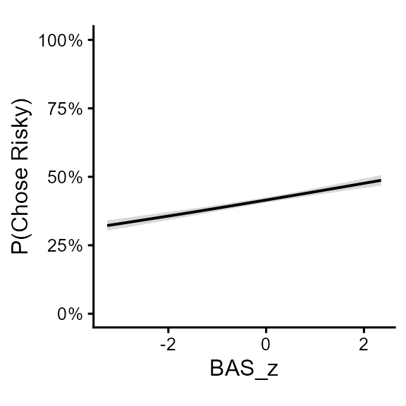
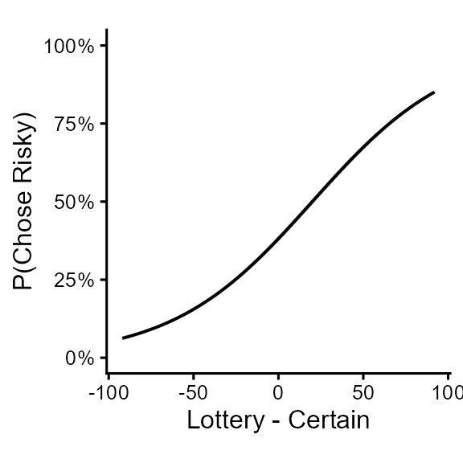
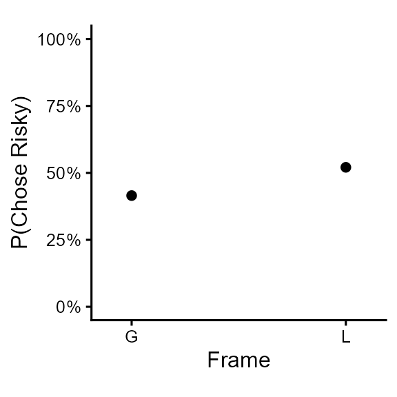
m1.2.1 <- lme4::glmer(chose_risky ~ IUS_z * lottery_certain_diff * frame +
(1 | item) + (1 | id),
dat, family = "binomial",
lme4::glmerControl(optimizer = "bobyqa"))
m1.2.2 <- lme4::glmer(chose_risky ~ STAI_T_z * lottery_certain_diff * frame +
(1 | item) + (1 | id),
dat, family = "binomial",
lme4::glmerControl(optimizer = "bobyqa"))
m1.2.3 <- lme4::glmer(chose_risky ~ BIS_z * lottery_certain_diff * frame +
(1 | item) + (1 | id),
dat, family = "binomial",
lme4::glmerControl(optimizer = "bobyqa"))
m1.2.4 <- lme4::glmer(chose_risky ~ BAS_z * lottery_certain_diff * frame +
(1 | item) + (1 | id),
dat, family = "binomial",
lme4::glmerControl(optimizer = "bobyqa"))
saveRDS(m1.2.1, here::here("Models", "risky-choice_1.2.1.rds"))
saveRDS(m1.2.2, here::here("Models", "risky-choice_1.2.2.rds"))
saveRDS(m1.2.3, here::here("Models", "risky-choice_1.2.3.rds"))
saveRDS(m1.2.4, here::here("Models", "risky-choice_1.2.4.rds"))m1.2.1 <- readRDS(here::here("Models", "risky-choice_1.2.1.rds"))
m1.2.2 <- readRDS(here::here("Models", "risky-choice_1.2.2.rds"))
m1.2.3 <- readRDS(here::here("Models", "risky-choice_1.2.3.rds"))
m1.2.4 <- readRDS(here::here("Models", "risky-choice_1.2.4.rds"))
sjPlot::tab_model(m1.2.1,
show.ci = F,
show.se = T,
string.se = "SE",
show.r2 = F,
dv.labels = "",
string.est = "OR")
sjPlot::tab_model(m1.2.2,
show.ci = F,
show.se = T,
string.se = "SE",
show.r2 = F,
dv.labels = "",
string.est = "OR")
sjPlot::tab_model(m1.2.3,
show.ci = F,
show.se = T,
string.se = "SE",
show.r2 = F,
dv.labels = "",
string.est = "OR")
sjPlot::tab_model(m1.2.4,
show.ci = F,
show.se = T,
string.se = "SE",
show.r2 = F,
dv.labels = "",
string.est = "OR")| Predictors | OR | SE | p |
| (Intercept) | 0.64 | 0.06 | <0.001 |
| IUS z | 0.97 | 0.05 | 0.596 |
| lottery certain diff | 1.02 | 0.00 | <0.001 |
| frame [L] | 1.57 | 0.16 | <0.001 |
| IUS z × lottery certain diff |
1.01 | 0.00 | <0.001 |
| IUS z × frame [L] | 1.06 | 0.04 | 0.088 |
| lottery certain diff × frame [L] |
0.99 | 0.00 | <0.001 |
| (IUS z × lottery certain diff) × frame [L] |
0.99 | 0.00 | <0.001 |
| Random Effects | |||
| σ2 | 3.29 | ||
| τ00 id | 0.47 | ||
| τ00 item | 0.05 | ||
| ICC | 0.14 | ||
| N item | 23 | ||
| N id | 200 | ||
| Observations | 18148 | ||
| Predictors | OR | SE | p |
| (Intercept) | 0.63 | 0.06 | <0.001 |
| STAI T z | 1.11 | 0.06 | 0.056 |
| lottery certain diff | 1.02 | 0.00 | <0.001 |
| frame [L] | 1.58 | 0.16 | <0.001 |
| STAI T z × lottery certain diff |
0.99 | 0.00 | <0.001 |
| STAI T z × frame [L] | 1.00 | 0.03 | 0.982 |
| lottery certain diff × frame [L] |
0.99 | 0.00 | <0.001 |
| (STAI T z × lottery certain diff) × frame [L] |
1.00 | 0.00 | 0.003 |
| Random Effects | |||
| σ2 | 3.29 | ||
| τ00 id | 0.48 | ||
| τ00 item | 0.05 | ||
| ICC | 0.14 | ||
| N item | 23 | ||
| N id | 200 | ||
| Observations | 18148 | ||
| Predictors | OR | SE | p |
| (Intercept) | 0.63 | 0.06 | <0.001 |
| BIS z | 0.86 | 0.05 | 0.005 |
| lottery certain diff | 1.02 | 0.00 | <0.001 |
| frame [L] | 1.59 | 0.17 | <0.001 |
| BIS z × lottery certain diff |
1.01 | 0.00 | <0.001 |
| BIS z × frame [L] | 1.06 | 0.04 | 0.109 |
| lottery certain diff × frame [L] |
0.99 | 0.00 | <0.001 |
| (BIS z × lottery certain diff) × frame [L] |
1.00 | 0.00 | 0.097 |
| Random Effects | |||
| σ2 | 3.29 | ||
| τ00 id | 0.46 | ||
| τ00 item | 0.05 | ||
| ICC | 0.14 | ||
| N item | 23 | ||
| N id | 200 | ||
| Observations | 18148 | ||
| Predictors | OR | SE | p |
| (Intercept) | 0.63 | 0.05 | <0.001 |
| BAS z | 1.17 | 0.07 | 0.005 |
| lottery certain diff | 1.02 | 0.00 | <0.001 |
| frame [L] | 1.58 | 0.16 | <0.001 |
| BAS z × lottery certain diff |
1.00 | 0.00 | <0.001 |
| BAS z × frame [L] | 0.97 | 0.03 | 0.322 |
| lottery certain diff × frame [L] |
0.99 | 0.00 | <0.001 |
| (BAS z × lottery certain diff) × frame [L] |
1.00 | 0.00 | 0.460 |
| Random Effects | |||
| σ2 | 3.29 | ||
| τ00 id | 0.50 | ||
| τ00 item | 0.05 | ||
| ICC | 0.14 | ||
| N item | 23 | ||
| N id | 200 | ||
| Observations | 18148 | ||
list(scale = list("IUS_z", "STAI_T_z", "BIS_z", "BAS_z"),
model = list(m1.2.1, m1.2.2, m1.2.3, m1.2.4)) |>
pwalk(\(scale, model) (ggeffects::ggpredict(model, terms = c("lottery_certain_diff[all]", scale, "frame")) |>
plot() +
labs(title = scale, y = "P(Chose Risky)") +
coord_cartesian(ylim = c(0, 1)) +
theme_classic(base_size = 12) +
theme(aspect.ratio = 1,
legend.position = "bottom")) |>
print())
list(scale = list("IUS_z", "STAI_T_z ", "BIS_z", "BAS_z"),
model = list(m1.2.1, m1.2.2, m1.2.3, m1.2.4)) |>
pwalk(\(scale, model) (ggeffects::ggpredict(model, terms = c(paste(scale, "[all]"), "frame")) |>
plot() +
labs(title = scale, y = "P(Chose Risky)") +
coord_cartesian(ylim = c(0, 1)) +
theme_classic(base_size = 12) +
theme(aspect.ratio = 1,
legend.position = "bottom")) |>
print())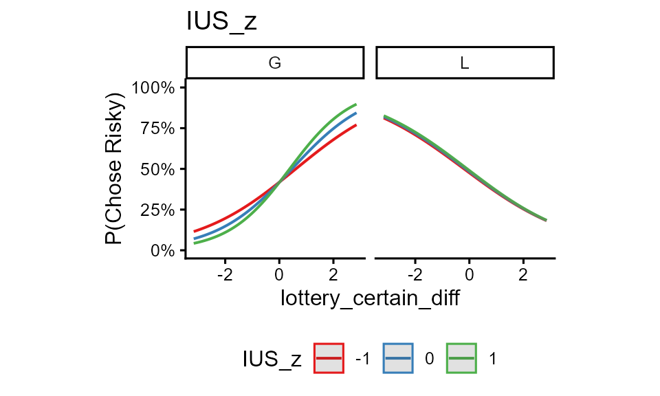
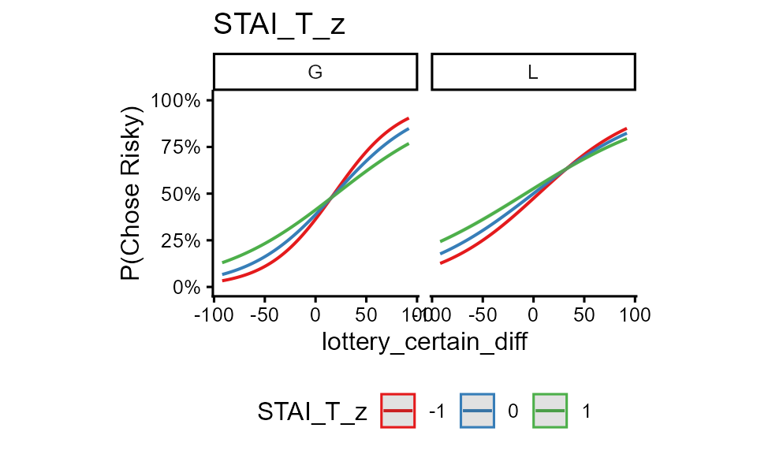
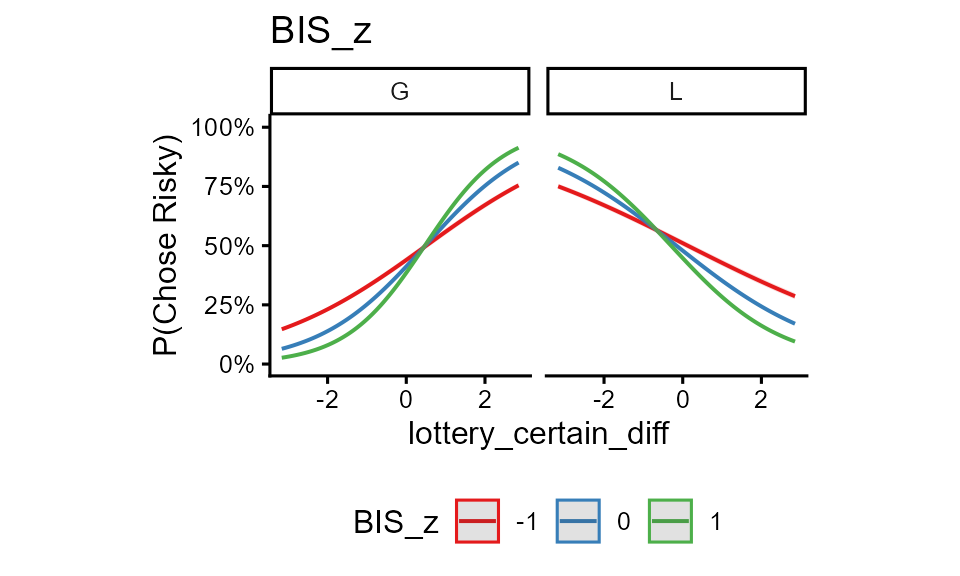
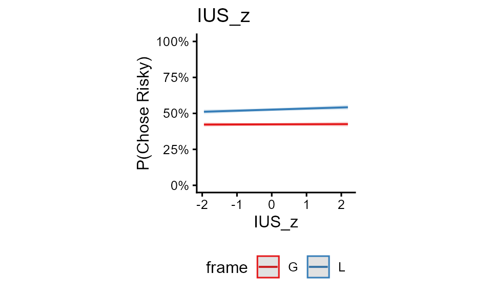
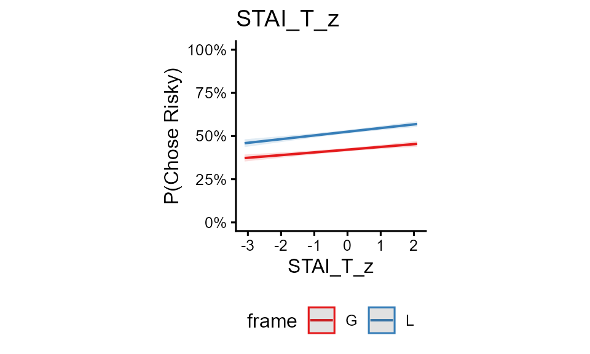
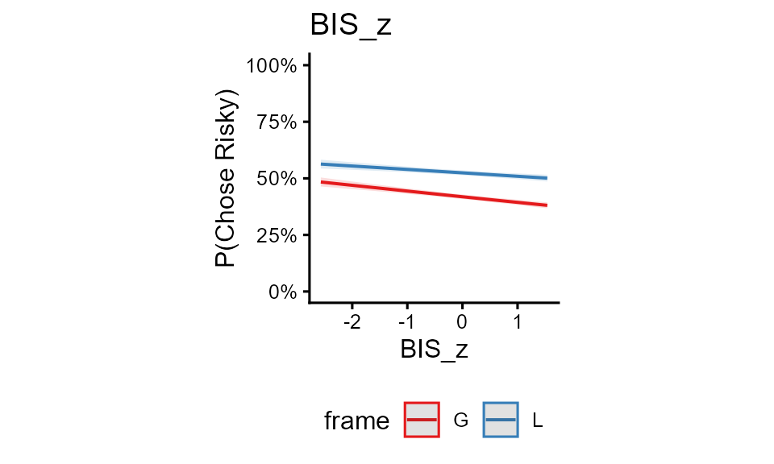
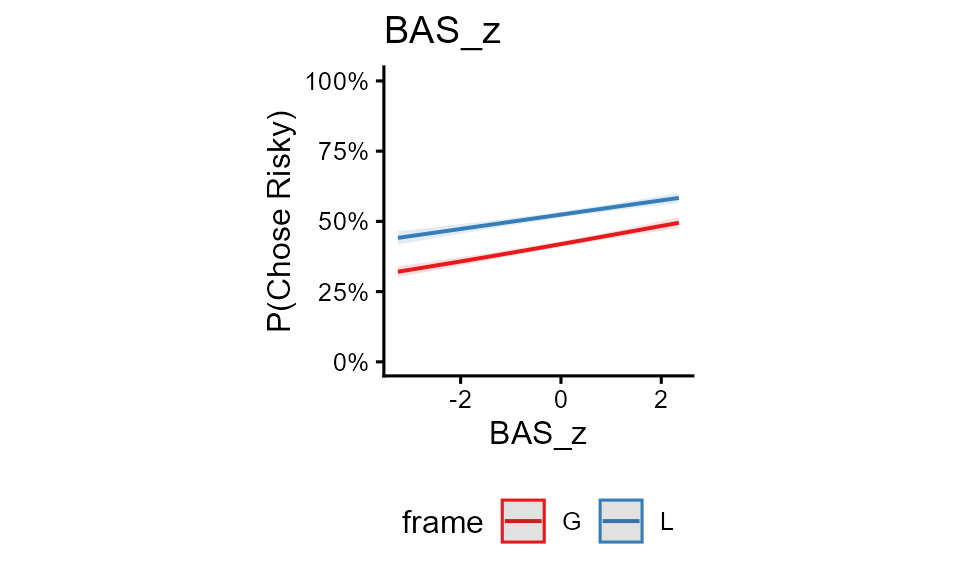